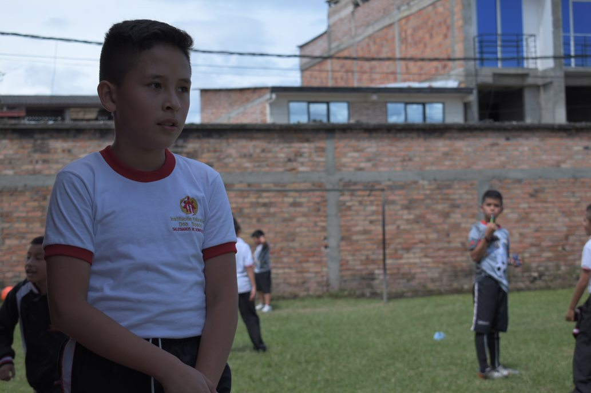
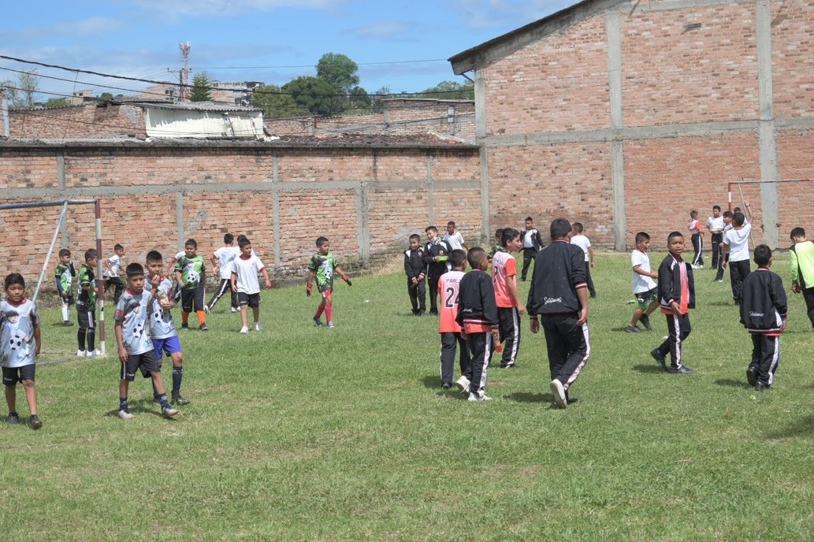
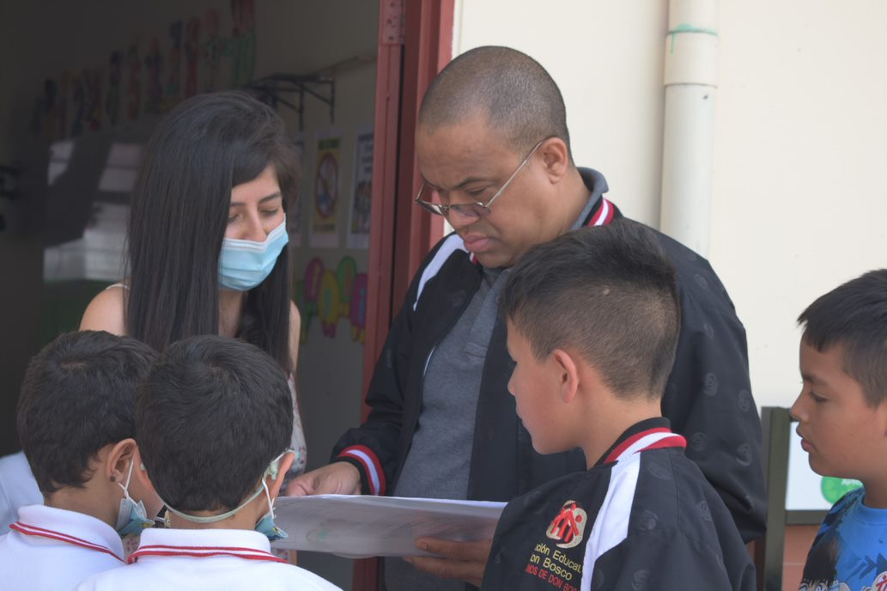

Riesgo 1

Riesgo psicosocial
La persona que esta
en el tecnico podria
sufrir daños como el
estres,fatiga,
depresion.
Solucion 1
Solucion
Tomar descansos de
15 minutos tomar agua
si lo necesita y
relajarse en ratos.
Riesgo 2
Riesgos fisicos
La iluminacion del
computador
nos podria generar
daños a largo
plazo en la vista.
Solucion 2
Solucion
Podemos bajarle
al computador la iluminacion
para no forzar
la vista y podemos tomar pausas.